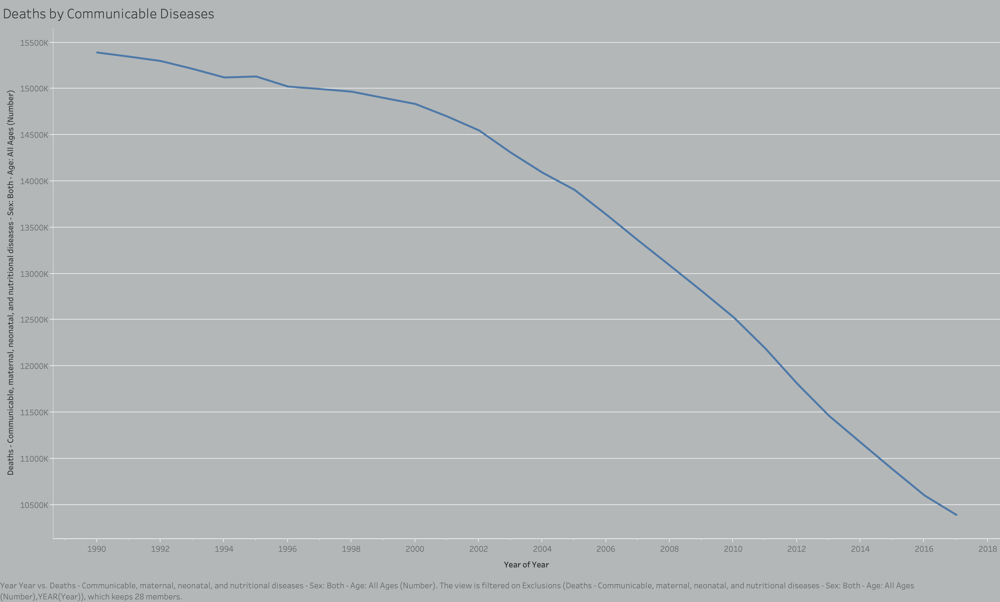
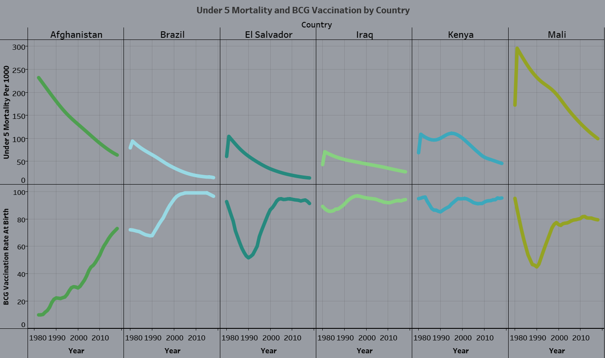
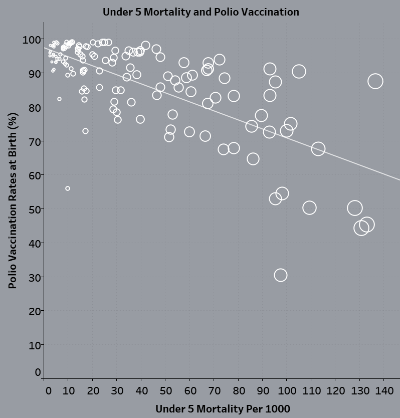
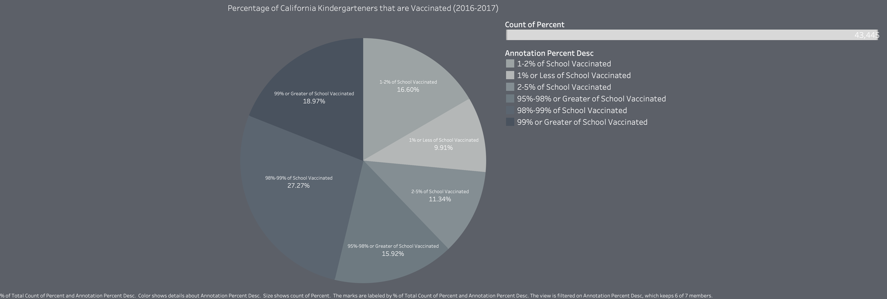
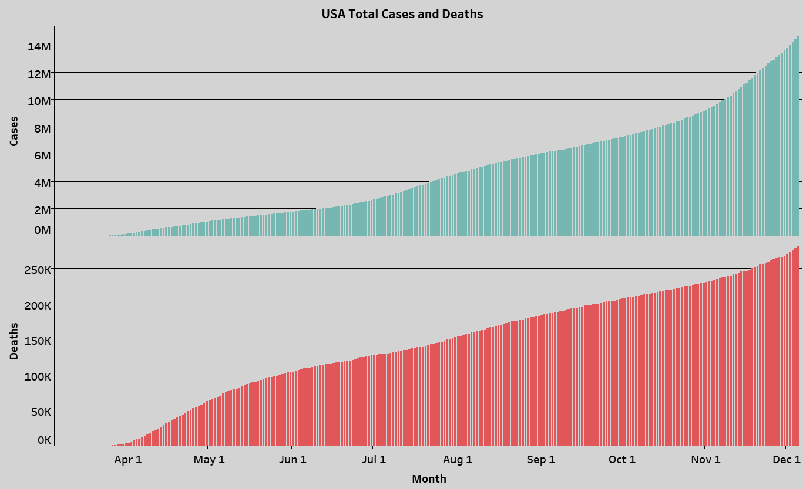

Team Members: Ariel Shurygin, Andy Lee, Sonia Fereidooni
Disease and Death
56 Million people died globally in 2017.
19% of those deaths came from communicable diseases. That is roughly 10.6 million deaths.
73% of those deaths came from non-communicable diseases, about 40.9 million people.
8% of those deaths came from accidents, about 4.48 million people.
For scale, Washington state has a population size of approximately 7.6 million people while oregon has a size of about 4.2 million people.

Today, COVID-19 is:
#1 cause of death in New York, Brazil, and Peru.
#2 cause of death in England
#3 cause of death in Sweden
Right Arrow to Learn About This Dataset ->
About the data
This data was compiled from the Global Burden of Disease Study in 2017 where the deaths since 1990 to 2017 were studied.
The data shown is for deaths only by communicable diseases. The data was then retrieved from ourworldindata.
COVID-19 death ranking was from thinkglobalhealth.org
Data can be found here: https://ourworldindata.org/causes-of-death
Lets see how well you can predict a pandemic!
Average spread rate: how many people does an infected vector cough on before it stops spreading the virus?
Natural Immunity: what is the percent liklihood, that when exposed to a viral load, that a person is infected.
Vaccine Immunity: Natural Immunity but for vaccinated persons.
Vaccination rate: % of population getting vaccinated
Give it a try and guess how many will be infected with our settings, click on hexagons to infect them the percentage buttons are shortcuts!
Once you have guessed, click run simulation to see how you did
Right Arrow to Learn About This Dataset ->
Feel free to change settings and explore factors on your own!
Keep in mind due to natural variance between spread rates may cause more or less people to become infected by random chance.
Pandemics are not a perfect science and super spreader events may cause an explosion of cases in a population.
Sources and data definitions.
The visualization seen is actually a query of a dataset created via a simulation program.
The github for the simulation used may be found here: https://github.com/shanedk/Herd-Immunity-Simulator
The simulation was adapted to run consequetivly for all combinations in the ranges displayed to the user, then calculated a variety of information
Based on a population size of 1000 persons. All values were transformed into percentages and displayed as such to the user when they clicked run simulation.
The hexagon format and interactive features were built upon with this base, found here: https://bl.ocks.org/mbostock/5249328.
What are Vaccines and how do they work?
Originally discovered by Edward Jenner in 1796, vaccines have become a quite normal part of our life, and are often seen as an annoyance in the western world.
But how do vaccines protect us and others from diseases?
Lets begin on a biological level, when a disease enters our body it produces a protein called antigen.
Antigens are responsible for taking over host cells and reproducing a virus in a persons body.
The bodies counter to antigen's are antibodies, antibodies are not a one size fits all solution however, and need to fit snugly around an antigen in order to
neutralize it. Vaccines preform the much needed task of exposing a persons body to these antigens with a dead virus, rather than a real one capable of rapidly reproducing
That way when a real virus comes along, the body will be able to respond much quicker with antibodies, rather than experimenting on different shapes.
But how can vaccines eradicate a disease, or protect those who havent even gotten a shot?
If enough persons in a population are vaccinated, the virus will not be able to spread quickly,
like a swimmer in honey vs water it will have a much harder time moving from person to person.
This is called herd-immunity, and it is how vaccines protect those unable to get them,
And it is also how we have eradicated diseases like polio from the USA and other western countries.
While many believe vaccination to be a personal choice, it impacts more than just a single person
Those who are unable to be exposed to a virus, even in small amounts, will be more protected in a population with high vaccine use versus low.
Vaccines have been shown to be one of the most effective ways to fight under five mortality in developing nations.
Non profits like the UN Childrens fund, have made vaccination their focus in many of the countries pictured below.
While vaccines are part of a larger picture of a country's overall health system, they are a benchmark of a country's health network
and are highly correlated with surviving childhood.
These two charts highlight vaccination's impact on our world.
Above we see UNICEF's involvement in a number of impoverished or countries war-torn countries.
Here we have see a slow increase in vaccination rates paired with an inverse trend of child mortality
To the right we see the overall trend in the world regarding vaccination rates for Polio,
a disease which we have widely eradicated thanks to vaccination programs like those run by UNICEF


Right Arrow to Learn About This Dataset ->
Sources and data definitions.
Both of these visualizations used aggregated and manipulated data originally pulled from the World Bank Data Portal
and API tool. A variety of datasets were used to create the ending database, including GDP, Under 5 Mortality, and Vaccination records.
The API tool may be found here: https://databank.worldbank.org/source/health-nutrition-and-population-statistics
When these visualizations refer to Under 5 mortality they mean specifically the likelihood per 1000 live births
that a child will reach five years old. Under five mortality does not include stillbirths or deaths correlated to childbirth
However under five mortality DOES include deaths by non-preventable causes (accidents ect).
When referring to vaccination rates of either Polio or BCG, the world bank measures a vaccination as the
completion of the necessary cycle (including booster shots) of a particular vaccine, by a child's first birthday.
Percentages are measured as the percentage of children between 12-23 months in the country for which the previous definition holds.
Who has access to vaccines?
Individual Income (in USD)
Percentage of Population Vaccinated
Projected Under 5 Child Mortality from Vaccine-Preventable Diseases Rate
Click the right arrow key to learn more about the data.
About the data
As mentioned in the previous slide, the Under 5 Child Mortality Rate refers to the projected rate of how many children under five years old will pass away due to vaccine-preventable causes, per 1000 live births.
The way the Under 5 Mortality Projection Rate is calculated based off (1) an individual's income in a certain population and (2) the estimated vaccinated percentage of the population that the individual is residing in is by a worldwide GDP dataset that allowed us to calculate the linear slope between the two factors and how they affect the overall Under 5 Child Mortality Rate.
Generally, as the income of an individual increases, the Under 5 Mortality Rate of the individual's population decreases. Symmetrically, as the percentage vaccinated of the individual's population increases, the projected Under 5 Mortality rate also decreases. When the projected Under 5 Mortality Rate is at 40%, for example, this means that for every 1000 live births, about 40% of these children will pass away due to a vaccine-preventable illness.
The sliders were implemented with aid from an example of D3 sliders found at the link: https://bl.ocks.org/johnwalley/e1d256b81e51da68f7feb632a53c3518.
How does access to vaccines vary among countries?
Is there a connection between the % of people under the age of 1 being vaccinated and economic/social measures such as GDP?
This chart represents the vaccination % of a number of countries against different vaccinations for ten different outbreaks. With the types of
infectious disease vaccinations listed above, click the various vaccines above and to view trends. Hover over a dot to view the specific country!
Right Arrow to Learn About This Dataset ->
About the data
This data was compiled from the databank at worldbank where the percentage of vaccinations received are measured by the percentage of
under 1 year olds who have received the vaccine.
This was our preferred way of measuring vaccine access as the last step for vaccine approval is typically
dependent on the pediatric results of trials - meaning that if it is approved for children then it is safe and effective to use for the entire population.
Data can be found here: https://databank.worldbank.org/source/health-nutrition-and-population-statistics
Vaccine Denial and Its Prevalence
Due to personal beliefs, many parents are able to excuse their children from required immunization using medical exemptions. In fact, in a substantial number of schools in California, more than half of kindergartners still do not have all of their required immunizations. 50% of California’s 58 counties have vaccination rates below the 95% threshold required for herd immunity. Although in recent years, vaccination rates in Californian children have gone up, in the 2016-2017 academic year, many kindergartners in California saw a spike in the lack of having adequate vaccinations. As we can see from the graph, even with the state of California having relatively stricter vaccination laws (with the passing of the 2019 vaccine bill), parents are still able to have their children exempt from proper vaccination.
In all countries surveyed, a majority of the population does not believe that vaccines are unsafe. We can see that among the highest vaccination disapproval rates was France with a ~33% disapproval rate, whereas the lowest vaccination disapproval rate was Egypt with a disapproval rate of less than 1%.
So how will vaccines change the course of COVID-19?
COVID-19 has demolished much more than our economy since it first emerged in Wuhan, China.
With 1.5 million deaths and 68 million cases worldwide many are looking to a vaccine as a solution to their quarantine induced craze.
As we learned vaccines are not a catch all solution, despite their strength they do not prevent tramsission from person to person,
only reduce the time the body needs to begin fighting the virus. If countries like the United States overcome the incredible challenges of
distribution of the vaccine, quarantine measures will still be needed for some time.
Herd immunity takes time and a critical mass of the population vaccinated before having a real impact.

Just as a vaccine seems right around the corner, countries are experiencing another surge in cases
straining our health systems to their breaking point.
While vaccination of our at risk population will greatly lower the deaths caused by the virus,
if we are unable to restrain ourselves once we get vaccinated, cases will continue to rise.